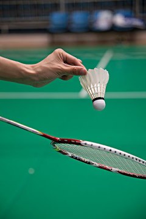

|  |
羽毛球是一项室内、室外都可以进行的体育运动。依据参与的人数，可以分为单打与双打，及新兴的3打3。羽毛球拍由:拍面、拍杆、拍柄及拍框与拍杆的接头构成。一支球拍的长度不超过680毫米，其中球拍柄与球拍杆长度不超过41厘米，拍框长度为28厘米，宽为23厘米，随着科学技术的发展，球拍的发展向着重量更轻、拍框更硬、拍杆弹性更好的方向发展。 现代羽毛球运动起源于英国。1873年，在英国格拉斯哥郡的伯明顿镇有一位叫鲍弗特的公爵， 在他的领地开游园会时，有几个从印度回来的退役军官就向大家介绍了一种隔网用拍子来回击打毽球的游戏，人们对此产生了浓厚的兴趣。因这项活动极富趣味性，很快就在上层社会社交场上风行开来。"伯明顿"(Badminton)即成为英文羽毛球的名字。1893年，英国14个羽毛球俱乐部组成羽毛球协会，即全英公开赛的前身。自1992年起，羽毛球成为奥运会的正式比赛项目。 |